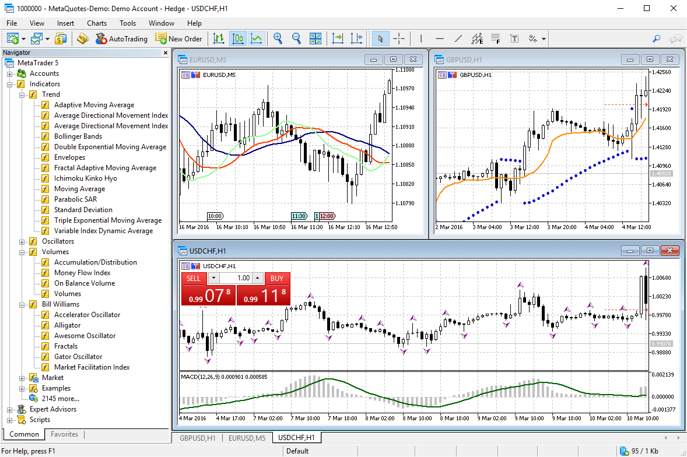

All Vortex FX MetaTrader 5 servers are situated in the Equinix NY4 data center in New York to optimize execution speed. The NY4 data center is renowned for being one of the most secure and reliable data centers globally. The MetaTrader 5 servers are cross-connected to us and our pricing providers to guarantee low latency and fast execution.
Vortex FX MetaTrader 5 trade servers boast latency of less than 1 millisecond to major VPS providers, either collocated in the NY4 data center or through dedicated lines to nearby data centers.
MetaTrader 5 Platform
At Vortex FX there’s always a market for you to trade. Our dedicated specialists are available for you 24 hours a day, 5 days a week.
Experience the next Generation of MetaTrader 5 with Vortex FX
The new platform represents an updated and improved version of its predecessor, which has long been the industry standard for traders worldwide. Vortex FX is proud to introduce the next generation MetaTrader 5 platform, designed to provide everything you need for trading the markets.
MetaTrader 5's advanced charting technology, coupled with sophisticated order management tools, enables you to monitor and control your positions quickly and efficiently. It is a powerful platform packed with brand new features aimed at enhancing your trading experience. It is available on both of Vortex FX's account types: Raw Pricing and Standard.
MetaTrader 5's advanced charting technology, coupled with sophisticated order management tools, enables you to monitor and control your positions quickly and efficiently. It is a powerful platform packed with brand new features aimed at enhancing your trading experience. It is available on both of Vortex FX's account types: Raw Pricing and Standard.
The MetaTrader 5 Client Terminal requires a Windows operating system of version 7 or higher. It is also possible to run this software on Mac OSX.

Why is Vortex FX MetaTrader 5 Platform Different?
- Raw Pricing
- Spreads from 0.0 pips
- Up to 1:500 leverage
- Low latency trading
- Deep interbank liquidity
- Multi-asset platform
-
Fast order execution
-

Spreads from 0.0 pips
Vortex FX boasts some of the tightest spreads among all forex brokers globally. Spreads start at 0.0 pips on the MetaTrader 4 and 5 platforms, with the average on EURUSD being 0.1 pips 24/5. This is currently one of the tightest average EURUSD spreads globally.
Our pricing connector aggregates a mix from up to 25 different price providers, ensuring that we can always source the best price for our clients and maintain tight spreads, especially during high volatility times such as news announcements. -
No Restrictions on Trading
There are no trading restrictions on the Vortex FX MetaTrader 5 platform. We provide ideal trading conditions for scalping and high-frequency trading, allowing traders to place orders between the spread as there is no minimum order distance and a freeze level of 0. This means orders, including stop-loss orders, can be placed at any level.
Traders can also hedge positions as there is no first in, first out (FIFO) rule with Vortex FX. Please note that different hedge margin levels and settings may be applied to different products and platforms. -
Level II Pricing – MarketDepth
The MetaTrader 5 Depth of Market feature displays the full range of available prices directly from our pricing providers. This provides complete transparency of available liquidity for each currency at any given time. High liquidity, asynchronous spot prices, and low latency ensure the tightest possible spreads. -
Raw Pricing Connectivity
Raw Pricing enables Vortex FX to provide tight spreads and optimal trading conditions on the MetaTrader 5 trading platform.
Access institutional-grade prices, almost on par with the world's leading execution venues, through our Raw Pricing. Traders can enjoy trading with no dealing desk, price requotes, or any form of manipulation on our market-leading platforms. Our extensive mix of up to 25 different pricing providers makes Vortex FX the top choice for high-volume traders, scalpers, and automated traders who demand some of the best trading conditions, including low spreads and fast execution speeds.
-
Flexible Funding and Withdrawal Options
We've simplified the process of funding and withdrawing funds by providing a wide range of options, including credit/debit card, Skrill, wire transfer, Neteller, FasaPay, China Union Pay, Bpay, and broker-to-broker transfer deposits. With these flexible funding options, you can conveniently manage your trading account finances according to your preferences. -
Flexible Lot Sizing
Our platforms offer flexible lot sizing, allowing you to manage your risk appropriately. We don't impose any restrictions on trade sizes and even allow trades as small as one micro lot (0.01) to be traded. This flexibility empowers you to tailor your trading strategy to your specific risk tolerance and investment goals.
About MetaTrader 5
The new platform represents an updated and improved version of its predecessor, which has long been the industry standard for traders worldwide. With its advanced charting technology and sophisticated order management tools, you can efficiently monitor and control your positions.
Packed with brand new features aimed at enhancing your trading experience, this powerful platform is available on Vortex FX Raw Pricing and Standard account types.
Packed with brand new features aimed at enhancing your trading experience, this powerful platform is available on Vortex FX Raw Pricing and Standard account types.
- Mobility
- Analytics - DOM
- MQL5
- Advanced Order types & execution
- Improved Strategy Tester for EAs
Automated Trading and MQL
Automated trading is facilitated on MetaTrader 5, utilizing trading robots that analyze quotes and execute operations on the financial markets. The platform comes with pre-installed technical indicators and trading robots, and traders have the option to install additional ones or develop their own Expert Advisors using MetaQuotes Language 5 (MQL5).
How to open an MetaTrader 5 account with Vortex FX.
Before you can start trading, you need to open a Standard or Professional MetaTrader 5 account with Vortex Fx. Once your account registration is successful, you can find your MetaTrader 5 account details listed in your Secure Client Area. From there, you can access and manage your trading account, including funding, withdrawals, and account settings.